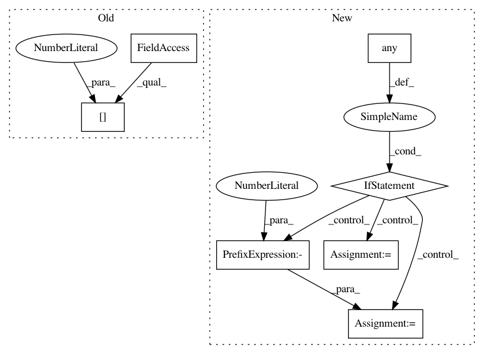

d6d6370cf0b7cb3d312b087ee63fc08f8f9b21ea,acoular/grids.py,PolySector,contains,#PolySector#Any#,648
Before Change
Array indicating which of the given positions lie within the
given sector
return ones(pos.shape[1], dtype=bool)
After Change
// if none inside, take nearest
if ~inds.any() and self.default_nearest:
dr2 = array(self.edges).reshape(-1,2).mean(0)
inds[argmin(dr2)] = True
return inds
In pattern: SUPERPATTERN
Frequency: 3
Non-data size: 7
Instances
Project Name: acoular/acoular
Commit Name: d6d6370cf0b7cb3d312b087ee63fc08f8f9b21ea
Time: 2020-06-02
Author: s.jekosch@tu-berlin.de
File Name: acoular/grids.py
Class Name: PolySector
Method Name: contains
Project Name: acoular/acoular
Commit Name: 4b8dec5e7199ad302c52bf9eb6914a170491334c
Time: 2018-05-03
Author: tom.j.gensch@campus.tu-berlin.de
File Name: acoular/fbeamform.py
Class Name: PointSpreadFunction
Method Name: _get_psf
Project Name: acoular/acoular
Commit Name: 276f8fc3fe9a7424bae6585ed4453190e2a70815
Time: 2018-05-02
Author: tom.j.gensch@campus.tu-berlin.de
File Name: acoular/fbeamform.py
Class Name: PointSpreadFunction
Method Name: _get_psf